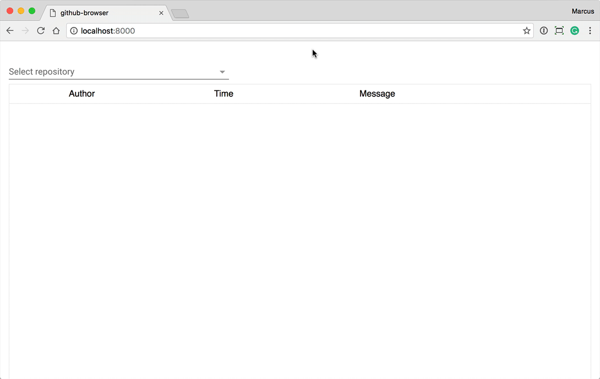
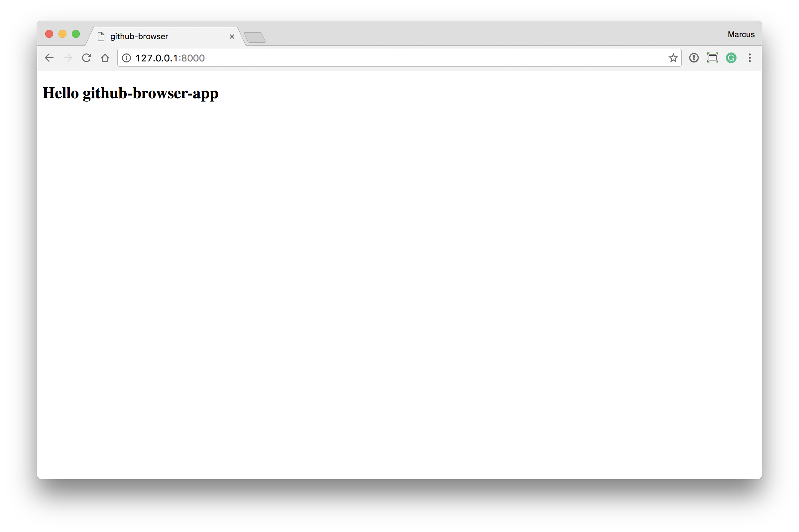
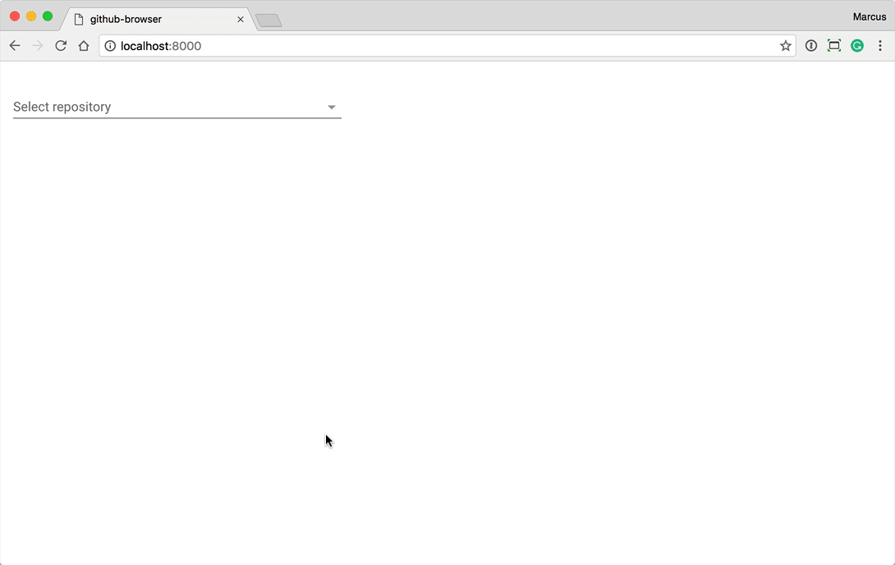
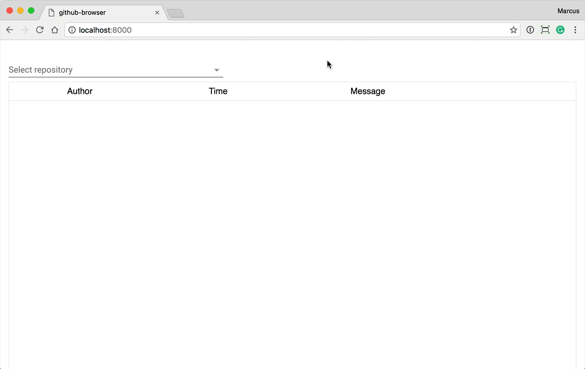

This code lab will teach you the basics of Polymer development by building a simple app for browsing GitHub repositories
and their commits. You should have a solid understading of basic web development to follow along.

What you'll learn
Installing and using Polymer components
Using data binding
Observing changes with listeners and observers
Fetching JSON data from a REST API
Laying out your components
Showing and hiding components conditionally
This code lab is a part of the Vaadin Elements Polymer intro. If you aren't familiar with Polymer development from before,
take a moment to watch the video below to catch up on the basics before getting started.
[INSERT ACTUAL VIDEO HERE]
Install prerequisites
You'll need to have Node and NPM installed to run these steps. If you don't have Node on your computer, go ahead and install
it from the Node website.
Polymer uses Bower for managing dependencies, install the latest version globally.
npm install -g bower
We'll be using Polymer CLI to initialize, serve
and build our project. Also install it globally.
npm install -g polymer-cli
Setup the project directory
Next, create a folder for the project:
mkdir github-browser
cd github-browser
Within the project folder, initialize the project using Polymer CLI:
polymer init
Select the application template:
Serve the content
You can run the application in your browser (-o opens a new browser window with the served URL):
polymer serve -o

Open the project
Finally, open the project in your editor of choice. Some editors that'll work well for Polymer development.
All of the code for this codelab will go in github-browser-app.html – index.html is only
used for bootstrapping the application and optionally loading a polyfill for making Web Components work with older browsers.
Installing the <vaadin-combo-box> selector
The first step in our project is to implement the dropdown selector for selecting a GitHub repository. We'll then hook it
up to query the GitHub REST API.
Install <vaadin-combo-box> from bower. Note that we need version 1.2 or later.
Once bower finishes, add an import statement for the component at the top of github-browser-app.html. Make
sure that the path to your bower_components folder is correct.
With the dependency installed and imported, we can start using the combo-box. Insert the following within the <template> tag, just after the closing </style>tag.
There are two different ways you can define properties; a shorthand way where you only define the type of the property (Strint,
Boolean...) and a long form where you can define more options, like observers and default values.
The loading and repo only define the type of the property.
For filter, we'll use the long-form definition so we can define an observer. The given function, _filterChanged will get called whenever the property value changes. Note that you need to give the function name as a string. We'll
implement the function shortly.
The repos property also uses the long form definition so we can give it a default value. Notice that we
use a function returning the value. This way all instances of <gihub-browser-app> get a separate
array instance. It won't make a difference in this example, but will be critical when you begin writing your own reusable
components.
Performing a REST API call
The only thing that remains now is to call the GitHub Search API with the filter text to populate the select with repositories that match the query. We'll do this by implementing the _filterChanged observer method.
There are a few things happening here, let's break it down into smaller steps:
In the _filterChanged method we use the built in debounce method to throttle the calls made to the API. We'll wait 500ms after the last keystroke before actually performing
the search.
In the _search method, we check that we have a non-empty search term and then set the loading property to true to give the user a visual indicator while we perform the search. Remember, we bound this to the combo-box
loading property which will show the spinner.
Finally, we perform the REST query with fetch. Every step in the call chain will return a promise that
the next step consumes.
The initial fetch call returns a promise for the raw response.
The following step takes that response and calls json() on it to return a promise which completes when
the JSON parsing completes.
With the result JSON at hand, we can extract the data we're interested in (repository names) and store those in the
repos property (which is bound to the combo-box). When all is done, we set loading property
to false to turn off the spinner. You can find the response JSON format here.
If any of the above steps fail, catch will get invoked to turn off the loading indicator.
Run the project
Run the project with polymer serve and you should be able to search for GitHub repositories.

In the next step, we'll fetch commits for the selected repository and show them in a data table.
Now that we have a way of finding and selecting repositories, the next step is to fetch and display commits for that repository.
Installing the <vaadin-grid> data table
We will use <vaadin-grid> for showing the commits, so we need to install it and import it into our
app. Note that you need version 2.0.0 or later for this tutorial.
bower install --save vaadin/vaadin-grid#^2.0.0
When bower finishes, add an import statement at the top of github-browser-app.html:
We need to configure <vaadin-grid> to show the relevant commit data. We do this by specifying <vaadin-grid-column> elements that include two templates. The first template, with class="header" will be used for
the column header. The second template will be used for each cell in that column.
Add the following code immediately after the <vaadin-combo-box>:
In the templates, you can get access to the data by binding to item. Vaadin Grid will iterate over all objects
in the commit property (which we'll define shortly) and update item to point to the object
for each row as the table gets built. You can inspect the response JSON format here.
Fetching commits
The next step is fetching commits whenever the user selects a new repository in the repository selector. First, change the
property definition of repo to use the long form so we can set up an observer method. Also define a
property for commits, where we'll store the commits for the selected repository.
Then, define the observer method in the Polymer object.
_fetchCommits: function () {
if (this.repo) {
fetch(`https://api.github.com/repos/${this.repo}/commits`)
.then(res => res.json())
.then(commits => this.commits = commits);
}
}
The method itself is very simple. It only checks that we have a value for repo (observer methods will also
get triggered when the value gets cleared), and then calls the GitHub API to get commits and store them in the commits parameter. Since we have bound commits to our grid, they will automatically get shown.
Customizing the columns
If you run the application now, you'll see that it already works. But let's make it look a bit nicer before declaring it
done.
We defined the flex attribute for each column to configure how much space each column gets. We want the
avatar column to only take up as much space as needed, and that the message column is twice as wide as the other
two remaining columns. The flex properties are based on CSS Flexbox.
Instead of directly binding to the date property in our item, we are calling a helper method, _formatDate,
with the date string so we can customize how it gets displayed.
You also need to define the helper method for formatting the dates:
The final tweak we need to do is to define a height and width for our avatar images to get them to display correctly. Add
the following in your <style>-block:
If everything is well, your app should now look something like this:

In the final step of the tutorial we'll add support for filtering commits by date.
Now that we have a way of selecting a repository and fetching commits for it, we want allow our users to filter down the
results by giving a date range for the commits they are interested in seeing.
Installing <vaadin-date-picker>
Just like in the previous steps, we need to install the date picker with bower and then import it in our file. Make sure
you get version 1.2.0 or later.
We only want to show the date filters if a user has selected a repository. We can do this with a dom-if template. Replace your current <vaadin-combo-box> code with the following:
We wrapped all our search and filtering related components in a div so we can style them in a bit.
The date filters are in a dom-if template so they only get shown if repo has a value.
We are using two-way data binding to a nested property. Instead of having separate properties for the filters, we'll
only define one object property that contains them both.
Define the dateFilters property and initialize it to an empty object (otherwise the data binding won't work).
Because we hvae both date filters in a single object property, we're not able to use the same way of observing changes as
we have used so far. If we did that that, our observer methode would only get triggered if the entire property object
got replaced, not when it's child properties get changed.
In order to listen for changes to child properties in an Object, we'll define an observers array in the Polymer object.
Polymer({
is: 'github-browser-app',
properties: {...},
_filterChanged: function () {...},
_search: function () {...},
observers: [
'_fetchCommits(dateFilters.*)'
]
}
The syntax is a bit strange at first, but simply means that _fetchCommits should get called if any property
in the dateFilters object changes.
With the observer method defined, we can now get to work changing the _fetchCommits method to pass along
the date filters. The GitHub API supports sending since and until query parameters with the
REST request to narrow down the results. You can see other search options here.
Change your _fetchCommits implementation to the following:
_fetchCommits: function () {
if (this.repo) {
let queries = Object.keys(this.dateFilters).map(q => {
if (this.dateFilters[q]) {
return q + '=' + this.dateFilters[q];
}
});
fetch(`https://api.github.com/repos/${this.repo}/commits?${queries.join('&')}`)
.then(res => res.json())
.then(commits => this.commits = commits);
}
}
The code looks a bit complex, but basically just does the following:
Loops through the keys of our dateFilter object and if the properties have values and collecting the key-value
pairs in an array. We also
Appends a query string to the REST call where the array from above gets joined with '&'-characters.
Run the finished app
Run your app with polymer serve and play around with the finished application.